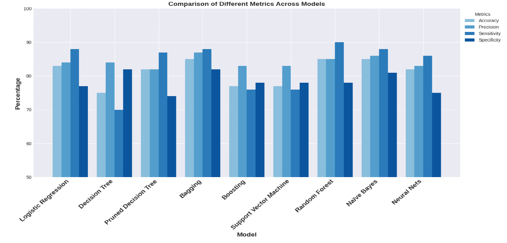
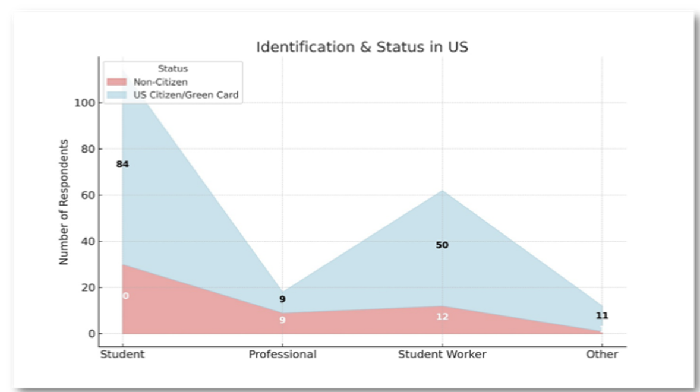
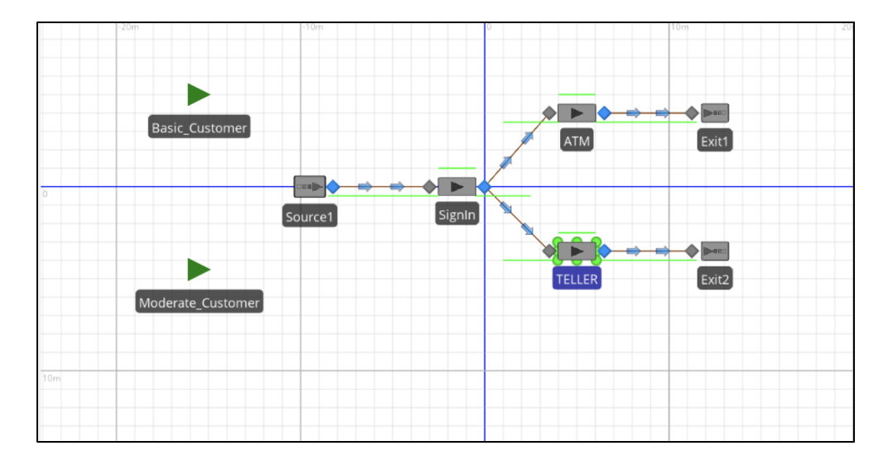
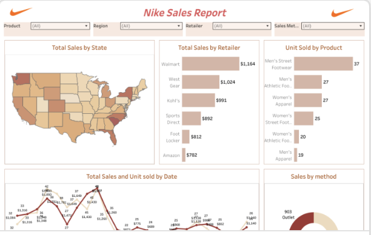
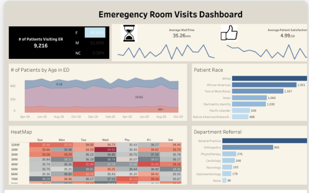
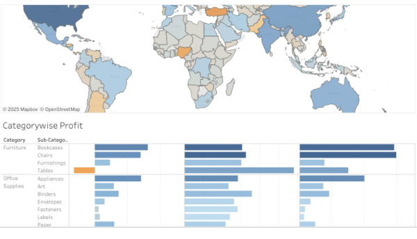
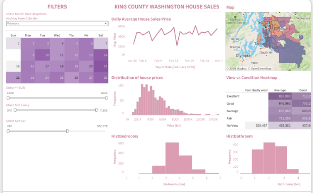

About Me
I’m a naturally curious individual with a passion for exploration—whether that means discovering new places or uncovering insights hidden within data. My background combines entrepreneurial experience with a strong foundation in the financial and healthcare industries. I bring expertise in data analytics and machine learning, along with a commitment to continuous learning. Whether working independently or as part of a team, I strive to contribute meaningfully and help make the world a better place.
GitHub Projects
Heart Disease Prediction
Developed a prediction model using classification algorithms and feature optimization techniques to achieve accurate medical predictions.
Business Intelligence Testing
Survey-based analysis on banking behavior using Python, Excel, Tableau, and statistical testing to uncover weak relationships in decision-making.
Simio Model for Banking
Simulation model to evaluate customer wait times and staffing needs using Simio for enhanced decision-making.
Tableau Dashboards
Nike Sales Report
Interactive dashboard analyzing Nike’s sales by category, product type, and channel to uncover performance insights.
Hospital ER Visits
Dashboard to study ER visit trends by age, race, time, and wait duration for better healthcare resource allocation.
Global Measures Report
Visualization of product category performance across regions to guide global strategy and market fit.
King County House Prices
Real estate price trends based on property features to help buyers and sellers make informed decisions.
Resume
Download My ResumeContact
Email: oshin.jain1995@gmail.com
LinkedIn: linkedin.com/in/oshinjain2601